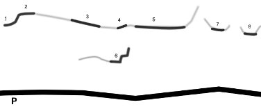

Midskogs
Lat: 62.303020
Long: 17.303700
Allmänt
En klippa som erbjuder lite av varje, sport, mix, trad, långt kort, sva, överhäng, lätt och svårt. Ett perfekt ställe för ett gäng med lite olika preferenser.
Vägbeskrivning
<div style="width: 355; float: right; margin-left: 10px; padding: 3px; border: solid 1px #cccccc;">
<googlemap lat="62.303020" lon="17.303700" zoom="11" type="map">
62.303020,17.303700,Midskogs
</googlemap>
</div>
Sväng av E4:an mot Matfors/Nolby. Kommer du söderifrån är detta strax innan Kvissleby. Åk genom samhället (Nolby), och fortsätt 4km. När klippan syns på höger sida av vägen fortsätter du 150m till en parkeringsficka på vänster sida. Gå tillbaks en bit längst vägen så går en stig in till Stora Väggen. Ingen anmarch att tala om.
Camping
Tidigare fanns det ett vindskydd ovanför
Lägerväggen
, men det brann ner hösten 2007. Det går fortfarande bra att tälta där. Tyvärr finns ingen tillgång till vatten, men eftersom klippan ligger så nära vägen så är det definitivt inget problem att bära upp vatten från bilen.
Access
Under december 2007 slöt Skogsvårdsstyrelsen och fastighetsägarna av Midskogsberget ett naturvårdsavtal. Var uppmärksam på häckande fåglar etc för att säkerställa accessen till berget. All avverkning av stora eller små träd, samt sly förbjuden utan att man först kontaktar styrelsen i
. Läs mer på klubbens
.
Bouldering
Det finns en del bouldering vid midskogsklippan. Alla problem finns inlagda på
. De flesta boulderproblemen ligger på block nedanför Stora väggen.
2008-02-25 fanns det
Leder
2011-05-12 fanns det
1. Pelarväggen

-
- (Namnlös spricka)
- 5
- Gemensamt andra halva med Belzeebub.
-
- Nerurotisk odysse'
- 6+
- Följ blocket något till vänster. Lös.
-
- Bancho
- 6+
- Spricka genom ett tak.
-
- Bancho direkt
- 6
- Alternativt utsteg till Bancho.
-
- Typhonen
- 6+/7-
- Svårsäkrad efter andra BB.
Spetsbergen
-
- Utsikten
- 5+
- Följ sprickan upp. Vik till vänster innan du når hyllan. Följ sprickan till toppen.
2. Övre väggen
-
- Nollsjuingen
- 5
- Avslutas på trädhyllan.
-
- Nollåttingen
- 4+
- Gemensamt utsteg med Frågetecknet och utropstecknet.
-
- Frågetecknet
- 5-
- Gemensamt utsteg med Nollåttingen och Utropstecknet.
-
- Utropstecknet
- 5-
- Gemensamt utsteg med Nollåttingen och Frågetecknet.
3. Svaväggen
Väldigt fint sva för nybörjaren. Lederna är relativt långa, tätbultade och snällt graderade.
(Från vänster till höger)
{|
|- valign="top"
| width=300px|
-
- Sexstuga i Sörmjöle
- 4+
- Ankare
Kategori:Lämplig för nybörjare
4. Primusväggen
Låg vägg med några bultade microleder.

-
- Leprachaun
- 6b+
- Ligger 10m t v om primusväggen.
-
- Timglaset
- 6+
- Ligger 10m t h om primusväggen
5. Stora väggen
(Från vänster till höger.)
{|
|- valign="top"
| width=300px|
-
- Hall of fame
- 7b
- Americaankare
-
- Jack the ripper
- 8-/8
- Ankare
-
- Semtex
- 6a
- ankare, funkar också att tradda, framsopad igen 2012
-
- Surdansken
- 6a
- Ankare.Hård för graden.
-
- Kingsize
- 6b+
- Varierad och mycket fin väggklättring, nästan extremt välbultad. Bult 12 en bastant kembult om man inte vill göra de avslutande, något enklare (men lika fina) metrarna upp till ankaret/firningsstationen.
-
- Det sorglösa syndikatet
- 7b+
- Ankare.
-
- För fet (för ett fuck)
- 5+
- Seriös
-
- Pultti
- 7b+
- Americaankare.
-
- Silence sucks
- 7a
- Ankare. Retrobultad. Klipp bara de nya bultarna för bästa upplevelsen.
-
- Double Trouble
- 8a
- Leden börjar till vänster om Milestone och korsar därefter Silence Sucks och avslutas därefter i Rosvå.
-
- 2 miles 2 graceland
- 8a+
- Startar som Milestone och går över till Graceland.
-
- Elvis
- 7c+
- Gemensamt ankare med Milstone.
-
- Lill-Elvis
- 7b
- Slutar vid det första ankaret på Elvis
-
- Graceland
- 8a
- Gemensam start med Lill-Elvis men fortsätter rakt upp från ankaret.
-
- Tommy the Cat
- 6b+
- Startar på den stora hyllan ovanför Primus ankare. Ankare
-
- Missing link
- 7b+
- Förlängning av Primus som avslutar i Tommy the Cat. Ankare
-
- Mer olja än mellanöstern
- 6c
- Ankare.
-
- Supercat
- 7b
- Linkup som startar i Superchoss och slutar i Tommy the Cat. Ankare
-
- Surjämten
- 5a
- Ankare , gemensammma 2 första bultar med milky way
-
- Baragon
- 6a
- Ankare, en liten travers vänster efter tredje bult
-
- Baragon direkt
- 6b
- Ankare, går rakt upp
-
- Master Mo
- 4
- Går uppe i ravinen, mitt emot Hellbent.

6. Lägerväggen
Den uppbrutna väggen som ligger närmast vägen.

(Från vänster till höger)
{|
|- valign="top"
| width=300px|
-
- Punchklubben
- 7b+
- Går på mitten av väggen till vänster om Rasputin. Tunn & tung.
-
- Vedspisen
- 5a
- Retrobultad 2008 och nu en bra och lätt sporttur.
-
- Bits inte
- 7a
- Ojämn led som ändå är ganska kul. Areteklättring. Ankare.
-
- Top Gun
- 5a
- Avslutas i det lilla diedret. Ankare.
-
- Bara bult
- 5b
- Följer bultlinjen utan att använda sprickan till höger.
7. Solväggen
Ett nyutvecklat klipparti som ligger till höger om stora väggen.

- 1
- Hellbent
- 7a
- Går uppe i ravinen.
- 1
- Vårsnö
- 6c
- Startar i gropen mellan hellbent & jan glimmer, upp från sandstensgrepp genom taket upp igenom diedret.
- 2
- Jan Glimmer
- 6b+
- Följer väggens vänstra arréte. ''Jan Glimmer'' som är den lättare av 2 leder viker ut på vänstersidan av arréten efter 4;e bulten medans den hårdare ''Krystal Steal'' går på stora väggen som vätter mot vägen.
- 3
- Krystal Steal
- 7b
- Följer väggens vänstra arréte. Går på stora väggen som vätter mot vägen. Tunn & trixig.
-
- Skuggspel
- 7b+
- Tunn väggklättring.
-
- Nightpusher
- 6b+
- Startar i hörnet mellan Krystal steal och Monomania.
- 4
- Monomania
- 7a+
- Går på aréten som är på mitten av väggen. Kan upplevas obehaglig men är välsäkrad.
- 5
- Back on track
- 7a+
- Startar i en tydlig spricka några meter till höger om arêtet.
-
- Born this way
- 6c
- Startar till höger om Back om track.
-
- Stäm upp
- 6a+
- Startar i diedret till höger om Nattarbete.
-
- Hatchi Batchi
- 7a
- Leden till höger om "Stäm upp" Går på aréten upp till samma ankare som Stäm upp.
-
- Frostbiten
- 6b
- Leden till höger om hatchibatchi aretet
-
- Pocket Rocket
- 6a
- Leden till höger om Frostbiten. Pocketklättring, som sedan leder till aretklättring.
Category:Medelpad
Kategori:sport
Kategori:trad
Kategori:sva
Kategori:vertikalt
Kategori:överhäng
Kategori:Medelpad
Copyright (C) Permission is granted to copy, distribute and/or modify this document under the terms of the GNU Free Documentation License, Version 1.3